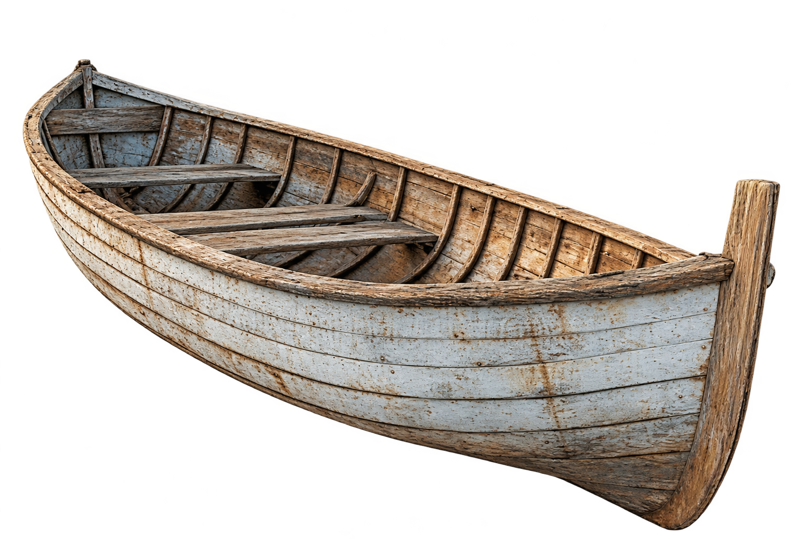

Jonah and the Great Fish is a story from the Bible that I find myself coming back to time and time again.
If you’ve heard the story, you’d know that Jonah was called upon by God to travel to Nineveh, a city condemned for its wickedness. Instead, he fled in the opposite direction, hoping to escape the very God that called upon him. But the sea grew restless, a storm arose, and Jonah was swallowed by a great fish, where he remained for three days and three nights. When he was finally returned to land, he went to Nineveh as he had been instructed. The people repented, and God spared the city. Yet Jonah was angry.
Now, I see myself in Jonah, past the watered-down version told in Sunday school.
In the same way that Jonah runs from God, I run from my responsibilities, from my problems, from the uncomfortable things that demand that I look inward. From my emotions, my vulnerability, from people, and perhaps most of all, myself. The complete irony is that we spend so much of our lives trying to outrun the very things that make us who we are.
It is fascinating to me that, regardless of the time period, authors, artists, scientists, and people like you and me have always been drawn to it. Perhaps for different reasons, but I find it no mistake that something so vast and unknowable should call to us so persistently. Perhaps we recognize something of ourselves in its depths. Perhaps we, too, are vast and unknowable, even to ourselves.
And so we go searching. Sometimes, we find ourselves caught in the storm. We find ourselves swallowed whole, left alone with the things we have spent so long avoiding. And we make it back to shore, only to discover that the journey has not made us entirely new. We know ourselves a little better, yes, but what is knowing if not transformation? Even Jonah, having survived the depths and fulfilled his calling, still had something left to learn.
I’ve come to realize that that is the nature of finding oneself. That, to understand yourself is not necessarily to know what to do with what you find.
There is a difference between knowing the depths and knowing how to live above them.
So, if the sea were to show you yourself, would you look?
